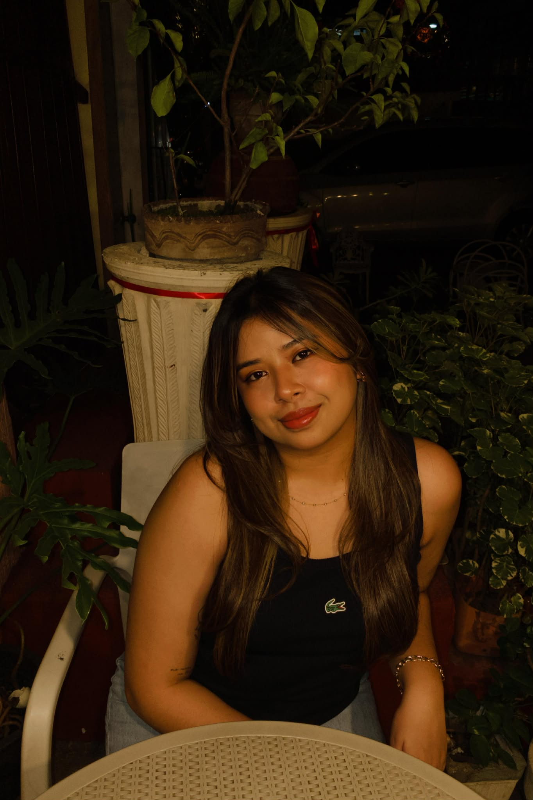
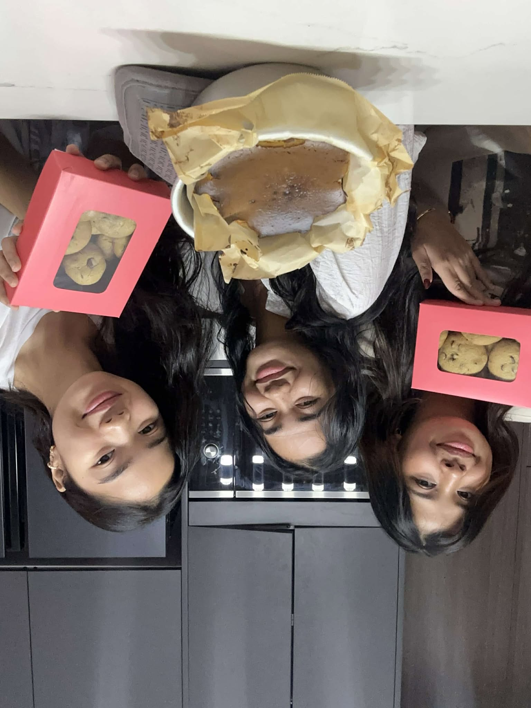
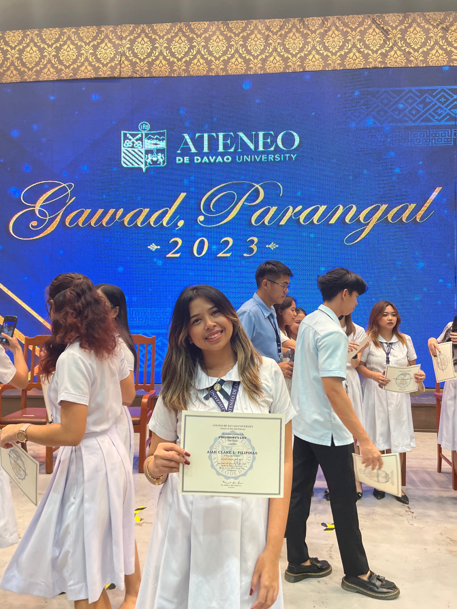
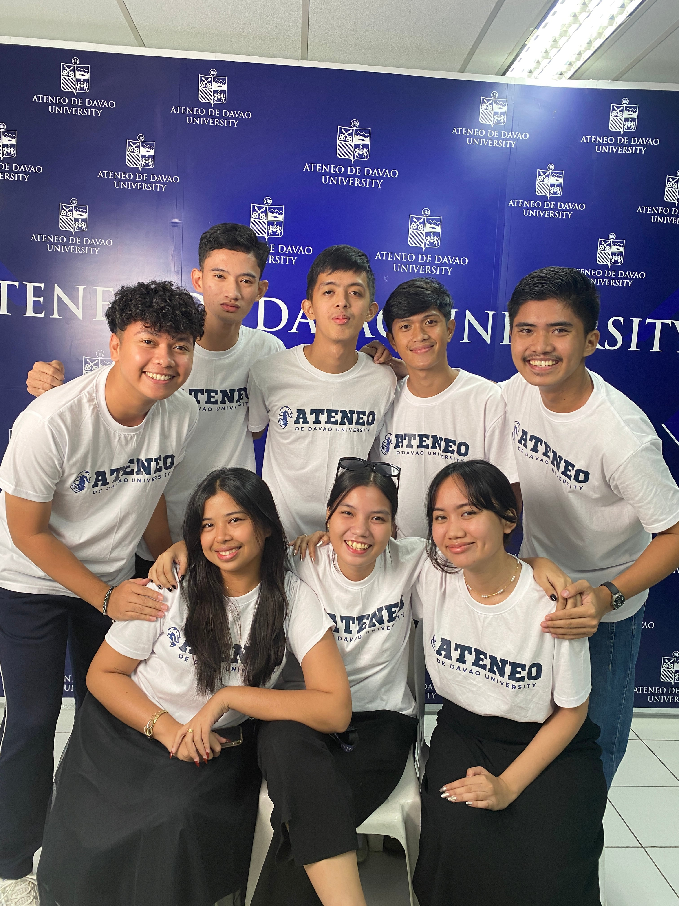
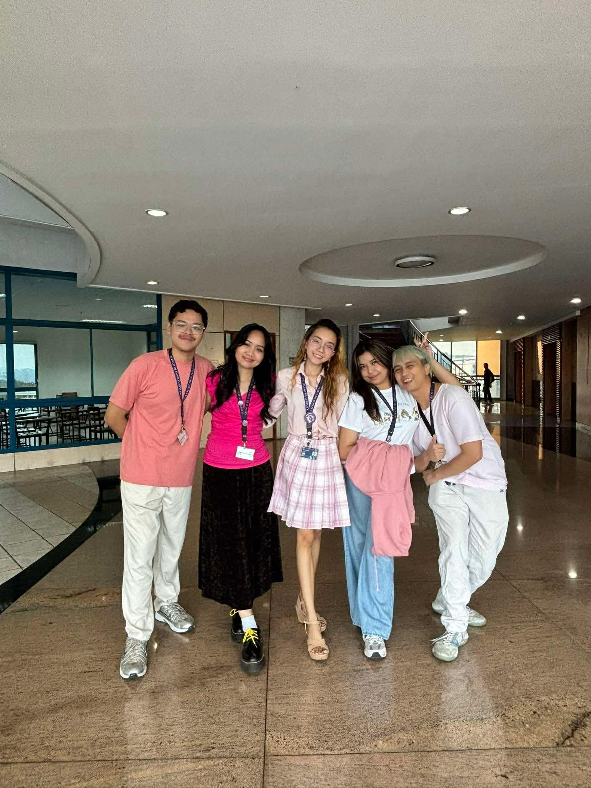
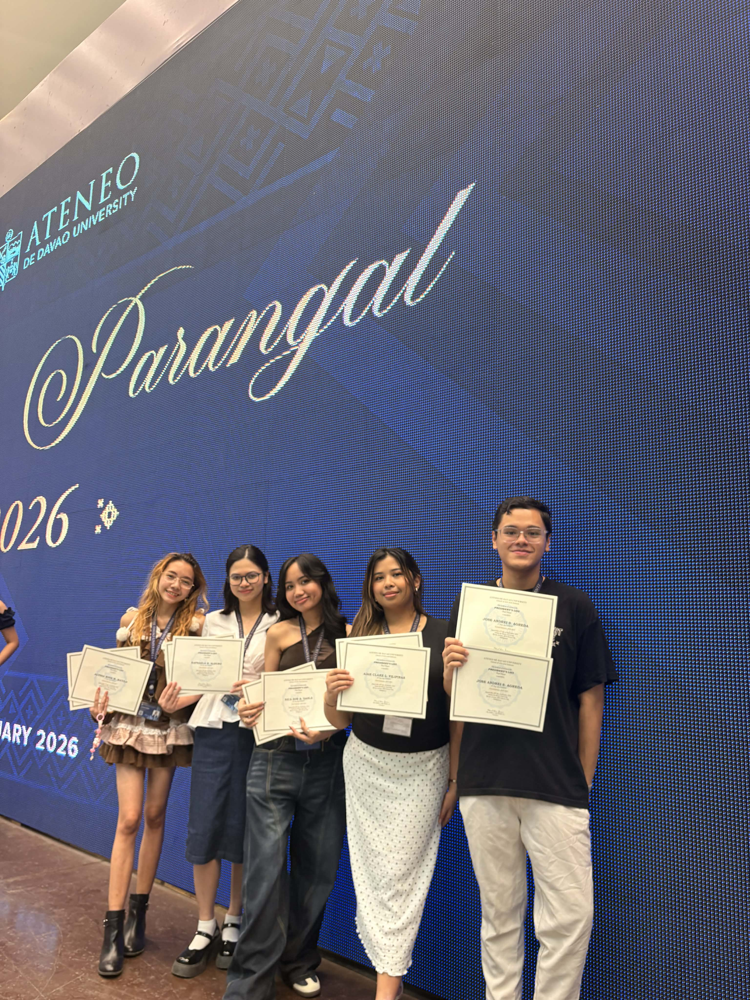

Conversion Story

The path to finding one’s place is rarely a straight line. For me, it began with a girl standing in front of a crossroad. Before entering Ateneo de Davao University, I was caught between desires and confusion. Ateneo wasn’t my first choice, yet in the quiet of my indecision, I asked for a sign. When the notification for a scholarship arrived, it felt like a clear, providential "Yes." I followed that sign, believing that the hard part was over. I didn’t realize the real conversion of my character was only just beginning.

My first week was a whirlwind of false starts. I began in Computer Engineering, quickly finding a sense of belonging. But then a logistical reality hit me. One of my scholarships wouldn't apply to that program. After just a week, I was forced to make a difficult choice, resulting in a sudden shift to Computer Science. In an instant, I became the outsider.

The struggle that followed wasn't just about difficult code or complex math. It was an internal battle with desolation. As a naturally outgoing and lively person, the silence was suffocating. I watched from the sidelines as established friend groups laughed inside the classrooms, while I spent my breaks alone, sometimes even falling asleep in classes. I eventually retreated to the digital world of online gaming or waited for weekends to see my friends from other schools.

I wrestled with persistent, nagging doubts: "Did I misread the sign?" "Did I choose the wrong school or the wrong program?" I was so desperate for a sense of belonging that I even asked a professor to move me to a different section just to have a reason to look forward to the day. The "joyful" version of myself felt like a ghost, replaced by a student who went through the motions and went straight home.

However, within that isolation, a subtle consolation began to take root. Because I had no one to lean on for academic help or social distraction, I was forced to face myself. I discovered a resilience I didn't know I possessed. I learned the art of independence. I realized that my "lively" nature didn't have to be fueled by a crowd. It could be sustained by my own ability to adapt. I found that I could enjoy things alone and that being "by myself" was not the same as being "lonely." This was my first major shift. I stopped looking for a group to define my happiness and started building a foundation of self-reliance.

The "conversion" became visible in my second year. The reshuffling of sections felt like a second chance, and grace appeared in the most mundane forms. There was a classmate with platinum blonde hair who offered me a red velvet brownie, and a guy in a bright orange tee who spoke Ilonggo, one of the languages of my hometown. From then on, new friends just kept appearing along the way.

As I navigated my way toward my third and fourth years, my perspective had undergone a total transformation. The difficulties didn't disappear. The academic stress and "dull" days still existed, but my reaction to them had changed. Before, I saw lack as a reason for doubt. Now, I see lack as a space for improvement. Before, I waited for happiness to find me. Now, I recognize that I have the agency to fill dull days with my own light.
When I look in the mirror today, I don't see the undecided girl who was looking for a sign to tell her what to do. I see a woman who has grown, someone whose thoughts and feelings are grounded in the reality of her own strength. I am no longer just a student at a university. I am a person who has learned that while friends make the journey sweeter, the power to endure and adapt comes from within. I am still learning, but I am finally aligned with the person I hoped to become.